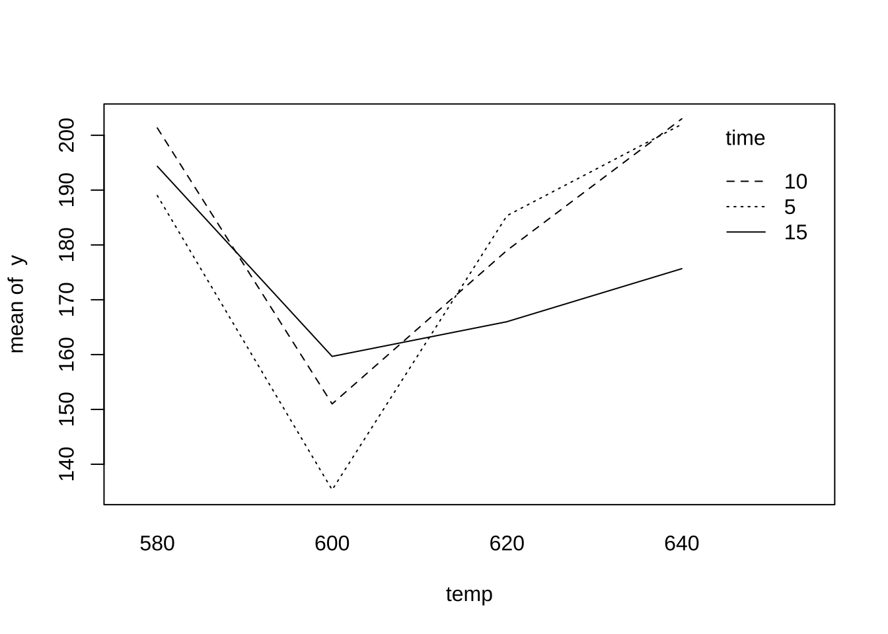
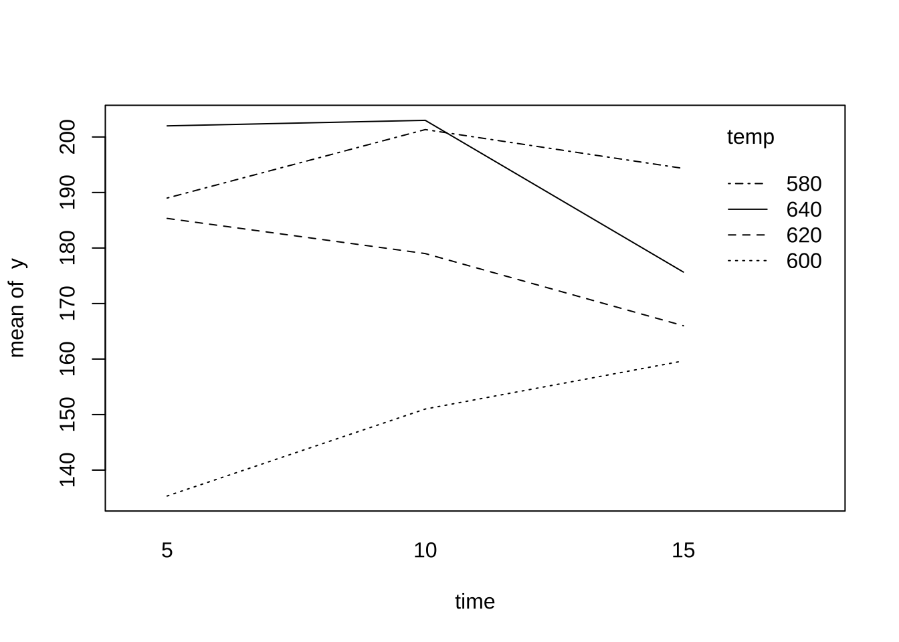

제 4 장 Split-Plot desgin
4.1 실험 계획: 교재 분할법 II - 예제 5.4 - 전자제품 수명
전자부품의 수명이 온도(580, 600, 620, 640도)와 시간(5, 10, 15분)에 의해 어떤 영향을 받는지에 대한 실험이다.
이 실험은 split-plot 설계를 적용하여 관측값을 얻었다. 온도를 먼저 랜덤하게 선택하고 선택된 온도에서 3개의 가열 시간에 대한 실험을 임의 순서로 진행하였다. 또한 각 실험은 3번 반복 하였다.
- 온도 (
temp, \(\alpha\)) : 주구, main plot - 1차 랜덤화 요인 - 시간 (
time, \(\beta\)) : 분할구, split-plot, sub-plot - 2차 랜덤화 요인 - 반복 (
rep, \(r\)) : 반복 요인
\[\begin{equation} x_{ijk} = \mu + r_k + \alpha_i + \gamma_{ik} + \beta_j + (\alpha \beta)_{ij} + e_{2(ijk)} \tag{4.1} \end{equation}\]
위의 모형식에서 반복과 온도의 상호작용 효과 \(( \alpha r)_{ik}\) 와 1차 랜덤화에 의한 오차 \(e_{1(ik)}\) 는 교락되어 블럭효과 \(\gamma_{ik}\)에 합쳐저서 나타난다.
\[ \gamma_{ik} = (\alpha r)_{ik} + e_{1(ik)} \]
4.2 자료의 구성
이제 실험자료를 입력하여 데이터프레임으로 만들어 보자
rep<- as.factor(rep(c(1:3), each=12))
temp<- as.factor(rep(c(580, 600, 620, 640), each=3, times=3))
time<- as.factor(rep(c(5, 10, 15), times=12))
y <-c(217, 233, 175, 158, 138, 152, 229, 186, 155, 223, 227, 156,
188, 201, 195, 126, 130, 147, 160, 170, 161, 201, 181, 172,
162, 170, 213, 122, 185, 180, 167, 181, 182, 182, 201, 199)
df <- data.frame(rep, temp, time, y)함수 xtab 을 이용하면 반복에 따라서 자료 구조를 쉽게 볼 수 있다.
xtabs( y ~time + temp + rep, df)## , , rep = 1
##
## temp
## time 580 600 620 640
## 5 217 158 229 223
## 10 233 138 186 227
## 15 175 152 155 156
##
## , , rep = 2
##
## temp
## time 580 600 620 640
## 5 188 126 160 201
## 10 201 130 170 181
## 15 195 147 161 172
##
## , , rep = 3
##
## temp
## time 580 600 620 640
## 5 162 122 167 182
## 10 170 185 181 201
## 15 213 180 182 1994.3 시각적 분석
이제 온도의 수준에 따른 변화를 볼 수 있는 그림을 그려보자. 온도가 증가하면서 수명이 줄어들었다가 다시 늘어나는 현상을 볼 수 있다.
with(df, interaction.plot(x.factor = temp, trace.factor = time, response = y))
가열시간의 수준에 따른 변화를 볼 수 있는 그림을 그려보자. 가열시간이 증가하더러도 수명이 크게 변하지 않는 것을 알 수 있다.
with(df, interaction.plot(x.factor = time, trace.factor = temp, response = y))
4.4 분산분석
이제 모형식 (4.1) 에 대한 분산분석을 실시해 보자.
여기서 유의할 점은 모형식 (4.1) 에서 블럭효과 \(\gamma_{ik}\)는 임의효과로 생각하며 반복 수준과 온도 수준의 조합이다. 따라서 블럭효과 \(\gamma_{ik}\) 에 대한 항을 Error(rep:temp)로 사용한다.
\[ \gamma_{ik} \sim N(0,\sigma^2_1), \quad e_{2(ijk)} \sim N(0, \sigma^2_E) \]
model<- aov(y ~ rep + temp*time + Error(rep:temp), data=df)## Warning in aov(y ~ rep + temp * time + Error(rep:temp), data = df): Error()
## model is singularsummary(model)##
## Error: rep:temp
## Df Sum Sq Mean Sq F value Pr(>F)
## rep 2 1963 981 3.32 0.107
## temp 3 12494 4165 14.09 0.004 **
## Residuals 6 1774 296
## ---
## Signif. codes: 0 '***' 0.001 '**' 0.01 '*' 0.05 '.' 0.1 ' ' 1
##
## Error: Within
## Df Sum Sq Mean Sq F value Pr(>F)
## time 2 566 283 0.46 0.64
## temp:time 6 2600 433 0.70 0.66
## Residuals 16 9933 621분산분석표에서 온도의 효과를 검정하는 F-통계량의 값은 14.0865 이고 p-값은 0.004이다. 따라서 5% 유의수준으로 귀무가설을 기각하며 온도에 따라서 제품의 수명이 유의하게 다르다.
가열시간의 효과를 검정하는 F-통계량의 값은 0.456 이고 p-값은 0.6418이다. 따라서 5% 유의수준으로 귀무가설을 기각할 수 없으며 가열시간에 따라서 제품의 수명이 다르지 않다.
온도와 가열시간의 상호작용 효과를 검정하는 F-통계량의 값은 0.6981 이고 p-값은 0.6551이다. 따라서 5% 유의수준으로 귀무가설을 기각할 수 없으며 상호작용은 유의하지 않다.